Hashes forenses verificados, con su comprobante en PDF
Calcula los hashes de un archivo, una carpeta o un disco completo, verifícalos con una segunda lectura y guarda el informe con quién lo hizo, cuándo y cuándo se verificó.
Gratis y de código abierto · Windows 10 y 11 · se instala sin administrador · se actualiza sola
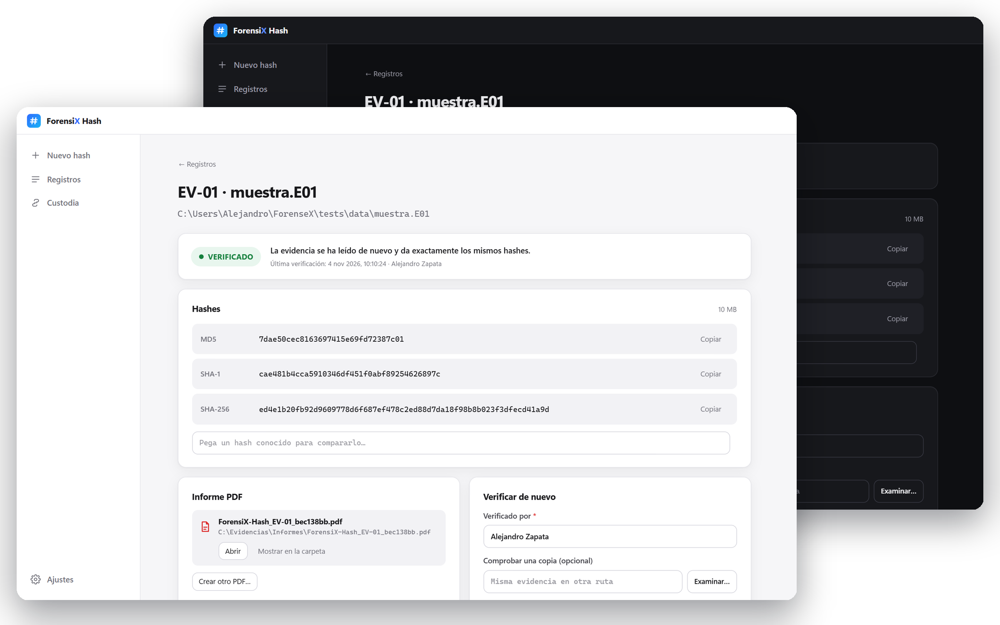
De la evidencia al PDF en cuatro pasos
Un asistente te guía y, al final, la app calcula, verifica y guarda el informe sola.
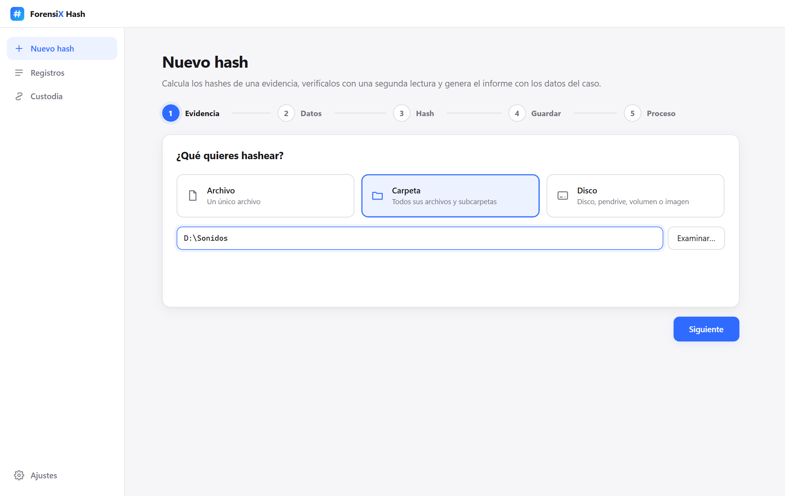
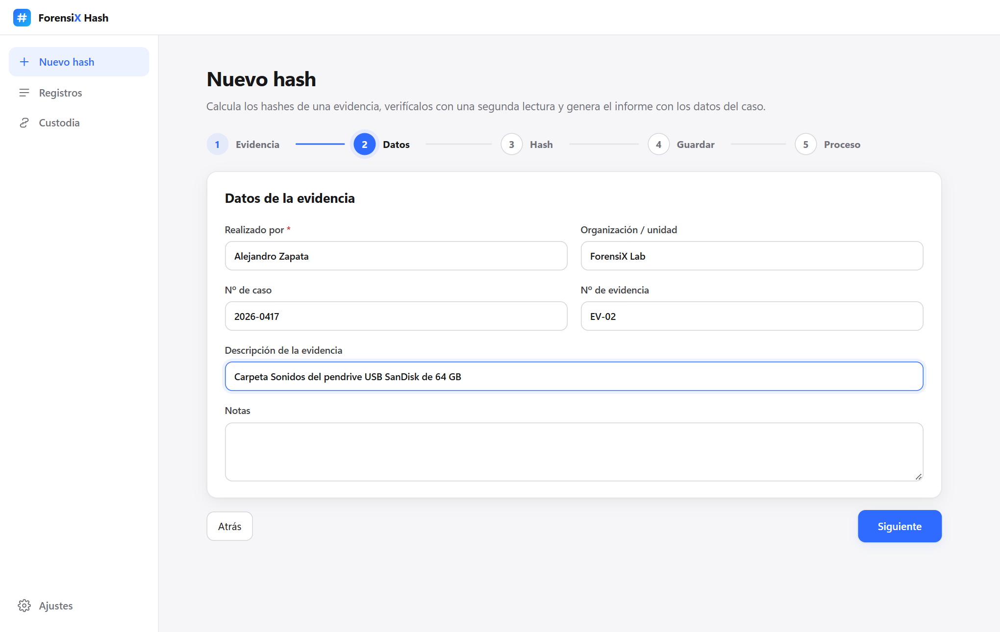
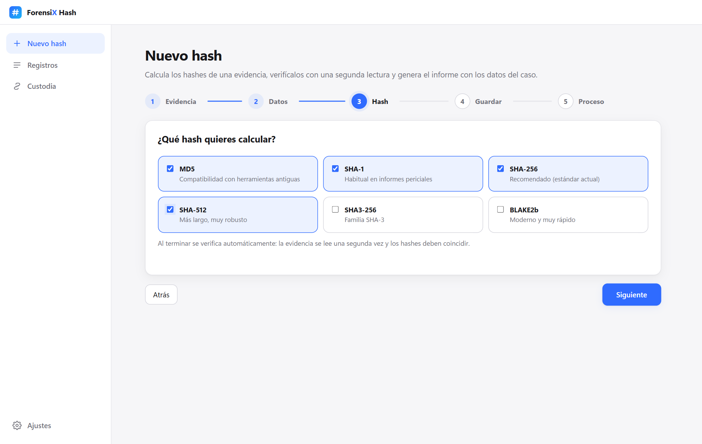
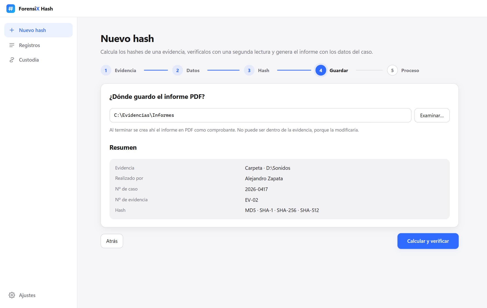
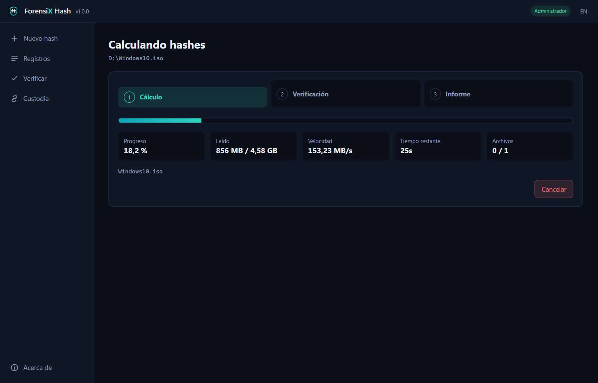
Sabes al instante si la evidencia ha cambiado
Se verifica sola al terminar y se puede volver a verificar cuando quieras, también una copia en otra ruta.
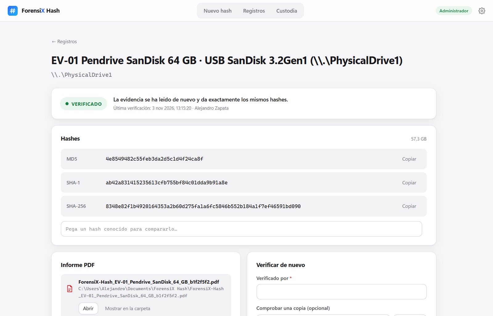
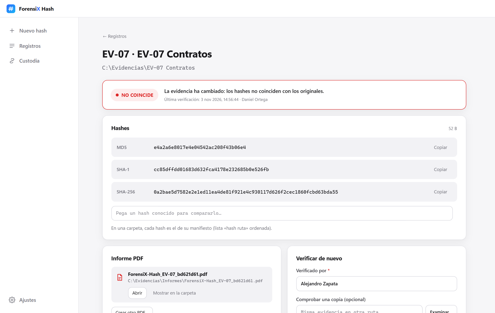
Un comprobante listo para el expediente
Al terminar se guarda en la carpeta que elijas, en español o inglés.
- Resultado, datos del caso y de la evidencia (modelo, nº de serie, conexión).
- Todos los hashes y la cronología: cálculo y cada verificación, con quién y cuándo.
- Cadena de custodia, sello de integridad y espacio para firmas.
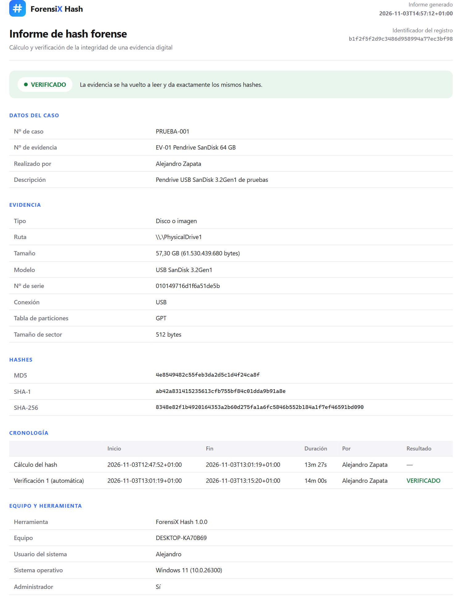
Todo queda anotado y encadenado
Cada operación se enlaza con la anterior por su hash: si alguien borra o edita un evento, la cadena se rompe.
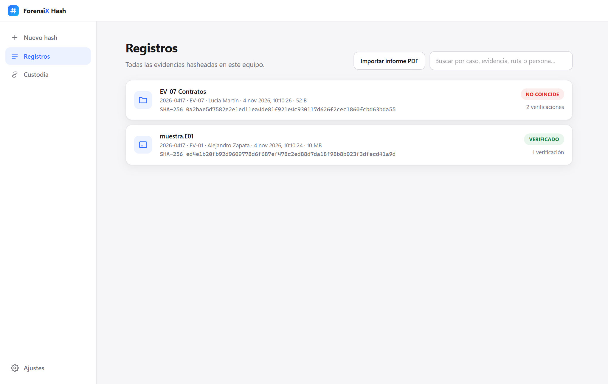
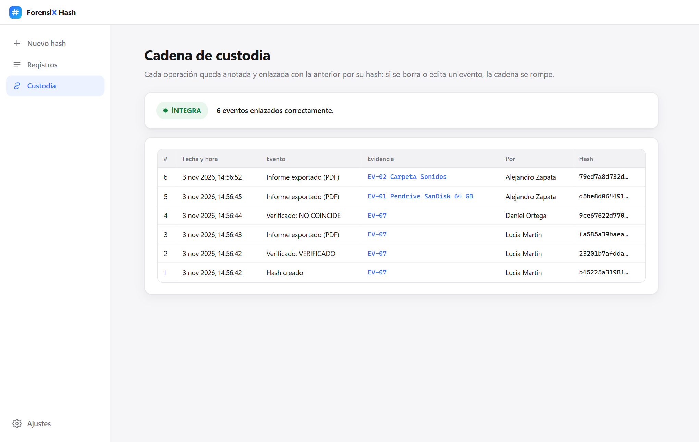
Hecha para peritos, laboratorios y estudiantes
Discos completos
Disco físico, volúmenes e imágenes .dd/.raw/.iso, sector a sector y en solo lectura.
Carpetas enteras
Hash de cada archivo y de la carpeta (su manifiesto), comprobable con sha256sum.
Seis algoritmos
Calculados a la vez en una sola lectura, en paralelo.
Nunca toca la evidencia
Solo lectura, solo unidades locales, y el informe nunca se guarda dentro de la evidencia.
Se actualiza sola
Con un clic, y solo si la firma Ed25519 es válida.
También por comandos
El mismo motor para scripts y laboratorios, con --pdf.
Se adapta a tu Windows
La primera vez usa el tema del sistema; después, el que elijas en Ajustes. También en inglés.
Automatízalo en tu laboratorio
El mismo motor que la app. Devuelve 0 si la evidencia queda verificada y crea el PDF donde le digas.
python -m forensix_hash disks
python -m forensix_hash disk \\.\PhysicalDrive1 \
--examiner "Ana Pérez" --case 2026-0001 \
--evidence EV-01 --pdf C:\Informes
python -m forensix_hash verify <id> --examiner "Luis Gómez"
Preguntas frecuentes
¿Modifica la evidencia?
No. Todo se abre en solo lectura y el PDF no se puede guardar dentro de la evidencia. Aun así, para evidencias reales usa un bloqueador de escritura: Windows puede escribir en un volumen al montarlo.
¿Por qué pide permisos de administrador?
Windows solo permite leer un disco entero a un administrador. La app avisa y se puede reiniciar como administrador con un clic. Para archivos, carpetas e imágenes no hace falta.
¿Envía algo a Internet?
No. Evidencias, registros e informes se quedan en tu equipo. Solo consulta GitHub para buscar actualizaciones, y se puede desactivar en Ajustes.
¿Cómo compruebo que la descarga es auténtica?
Cada versión publica SHA256SUMS.txt firmado con los hashes del instalador y del .exe. En PowerShell: Get-FileHash .\ForensiX-Hash_1.0.0_x64-setup.exe -Algorithm SHA256 y compara el valor.
¿Cómo se instala y se desinstala?
Descarga ForensiX-Hash_x.y.z_x64-setup.exe de la última versión y ábrelo: se instala para tu usuario sin pedir administrador, con acceso en el menú Inicio y en el escritorio. Se desinstala desde Aplicaciones instaladas de Windows y tus registros e informes se conservan. También hay un .exe portable que no necesita instalación.
¿Puedo usarla en mi trabajo?
Sí. Es código abierto con licencia MIT: puedes usarla, modificarla y redistribuirla libremente, también con fines comerciales. Se ofrece sin garantía, así que valídala según tu procedimiento antes de usarla en un caso real.